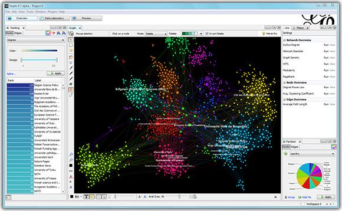
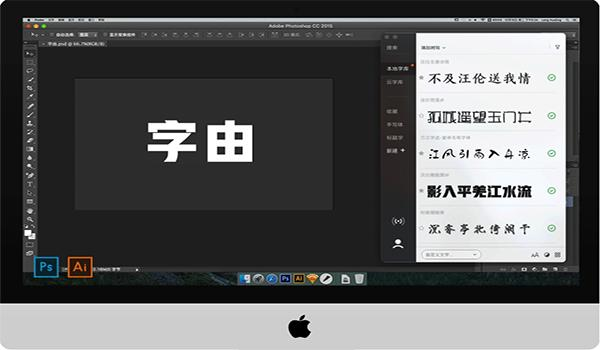
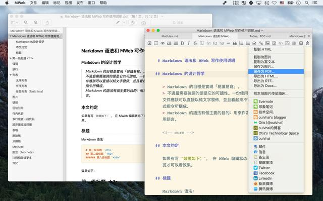
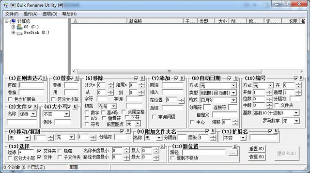
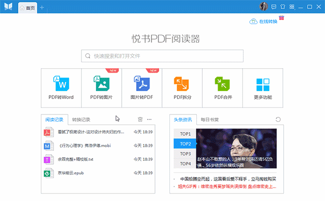
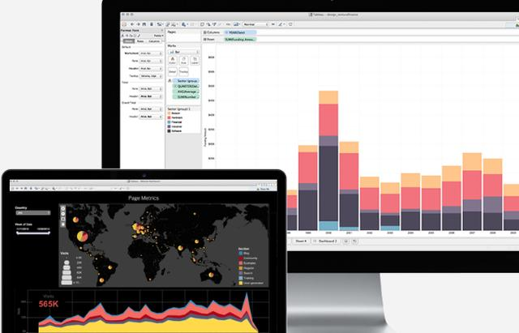

摘要：在知识更新速度飞快的形势下，不断的学习是每个人适应社会 ，提高自身竞争力的惟一可行之道。在网络时代，学习离不开网络。下面，我向你推荐几个我常去，并觉得对工作、学习非常有帮助的利器，希望这些利器同样对你有用。
1、社会图谱数据可视化分析的工具——Gephi
Gephi是进行社会图谱数据可视化分析的工具，不但能处理大规模数据集并且Gephi是一个可视化的网络探索平台，用于构建动态的、分层的数据图表。用户可以使用这款软件进行网络社交图和分析的绘制软件，拥有探索性数据分析，链接分析，社交网络分析，生物网络分析等功能，可以兼容win、mac、linux等操作系统，能够广泛地应用于互联网，生物医学，交通网络分析等领域。可视化网络可达到上百万个元素。Gephi的UI以可视化为中心，类似图片处理工具Photoshop。所有操作（比如布局、过滤、拖拽）都可以实时完成。
用途：可以供大学研究项目数据分析使用，新闻工作者，统计研究，微博信息研究等。

官网直达：https://gephi.github.io/
2、设计师必备字体利器——字由
字体是设计中不可或缺的一部分，近些年来也涌现出越来越多的优秀字体作品，但找到并且管理这些字体并不容易。曾几何时，字体下载安装如此让你觉得如此繁琐和不安，在字由中，只需找到心仪字体，鼠标轻点字体右侧的对勾图标，心仪字体即刻呈现。字由是为设计师量身定做的一款字体工具。字由收集整理了上千款精选字体，设计师可以通过收藏，搜索，标签，案例等快速找到心仪的字体，并在设计软件中无缝的使用这些字体。
用途：可供设计师做字体管理
官网直达：http://www.hellofont.cn

3、写作、记笔记、静态博客生成软件
这个对于经常写博客、文字工作者绝对是个利器。MWeb是一款基于MarkDown编辑器和静态博客生成工具，是一个专门为用Markdown写文章并且要发布成网站、博客的生成工具，即可当编辑器使用又可以当博客生成工具来使用，比Octopress和 Jekyll工具加简单易用。全面支持 Github Flavored Markdown 语法如 TOC、Table、Fenced code block、LaTex、Task lists、Footnote 等。写作模式还支持拖拽或粘贴插入图片和附件，首创的在编辑器内直接显示本地图片的功能，很好的解决了 Markdown 写作时必须在预览才能看到图片的问题。支持导出带目录的 PDF（导出带目录的 PDF 目前还不支持 macOS Sierra），带代码高亮的 HTML，图片，RTF 和 docx。支持发布/更新到 Wordrpess 博客、支持 Metaweblog API 的博客服务。
用途：文字工作者（记者、编辑、写作者、博客者）们的写作、记笔记、静态博客生成
官网直达：http://zh.mweb.im

4、最好用的文件更名工具：Bulk Rename Utility
掌握批量修改文件名的方法对生活是有很大的帮助的，特别是整理文件的时候，当然一款简单好用的软件也是必不可少的。初见此你可能会被其多而杂乱的用户界面而感到头疼，但是在功能方面确实强大，我已经找了许久了，这款文件重命名软件曾被多个网站誉为“最好用的文件更名工具”。Bulk Rename Utility支持批量重命名照片、重命名MP3、重命名普通文件和文件夹。支持为文件名称添加日期，自动编号，批量删除或插入指定字符到指定位置，批量替换指定字符，添加前缀或后缀，批量删除数字、汉字等多达13项操作内容。并且支持即时预览功能。另外，Bulk Rename Utility 还支持对文件扩展名的批量更改，在你更改完成后，支持保存更名后的文件到新位置。
用途：一般工作中需要批量重命名照片、重命名MP3、重命名普通文件和文件夹，尤其是编辑人员
官网直达：http://www.bulkrenameutility.co.uk/

5、专门阅读常见文档的阅读软件：悦书PDF阅读器
办公族、科技人员，学生，文职人员，教师等会看大量的文献或文档资料，而文献资料的保存通常又是pdf格式的，pdf格式文稿不会因为电脑的改变轻易的改动格式，方便了我们的文档阅读，因此选择一款优秀的pdf阅读器很重要。悦书PDF阅读器是一款万能的PDF阅读器,支持PDF、图片、PSD、office文档、编程文档等上万种文件格式，支持PDF，Mobi等常用阅读文档格式和图片格式以及多种开发语言文档，Office文档在线和本地互相转换，支持高亮，下划线，批注等阅读功能，多种阅读模式一键切换。
用途：文档、图片等文件格式阅读、加密和解密
官网直达：http://www.yueshupdf.com/

6、自动化报销OCR发票录入的利器：报销吧
报销发票怎么验证真伪？作为上班一族，老板给了租房补贴、饭补、交通补贴后，是不是要拿发票来抵，一张发票、两张发票....什么时候是个头，然后再进行报销，等老板审批签字，是不是有点麻烦？针对发票信息录入难点报销吧推出了一款发票录入神器，运用先进的OCR图片处理技术和数学算法，达到对图片文字的精准识别，对发票图片进行识别并输出结构化信息。报销吧可以自动识别录入替代传统手工录入，解决企业发票信息录入工作繁重、人工操作易出错等难题，解放双手，办公自动化、流程化，提高时间的利用效率。而报销吧整合国内的众多旅游服务商，比如：飞鹤航空、携程与同程网的机票酒店、滴滴出行企业版、京东企业购等，一款软件内可以实现商务出差全过程，从出差到报销，通过全额垫资、授信月结、统一发票的消费模式节省企业员工、行政、财务的报销时间。
用途：报销发票验证真伪，商务出差报销管理，财务做账自动化
官网直达：http://www.baoxiaobar.com/
7、把剪贴板的内容直接粘贴为文件
在电脑上怎么快速尽情剪贴呢？以前吐槽哥使用过一个，虽然用过一个类似的，但不能复制图片内容啊。PasteEx是一款可以帮助我们把剪贴板的内容直接粘贴为文件的效率软件，能够帮助我们将把剪贴板的内容直接粘贴为文件，并且可以自动识别图片的扩展名，以及自定义文本扩展名规则。使用 PasteEx 可以将代码片段、图片等内容直接粘贴、任意类型文本、源代码、图像文件，软件支持自动识别图片的扩展名，保存为为磁盘文件。
用途：可以将代码片段、图片等内容直接粘贴，对于办公人员特别是程序员来说是一个好帮手
官网直达：https://github.com/huiyadanli/PasteEx

1000款各有特色的软件：这是一个新栏目，我们通过网络（apple store、软件站、fnd.io等渠道）帮助你挖掘1000款各有特色的软件，每天为你奉上7款不同“特色”的主题软件推荐，涵盖工作办公、效率生产、生活常用、商务出行等等，不限于移动端、网页版、电脑版系列软件，以此提高你的效率与软件见识，关注吐槽哥，随时掌握一手软件信息源头。